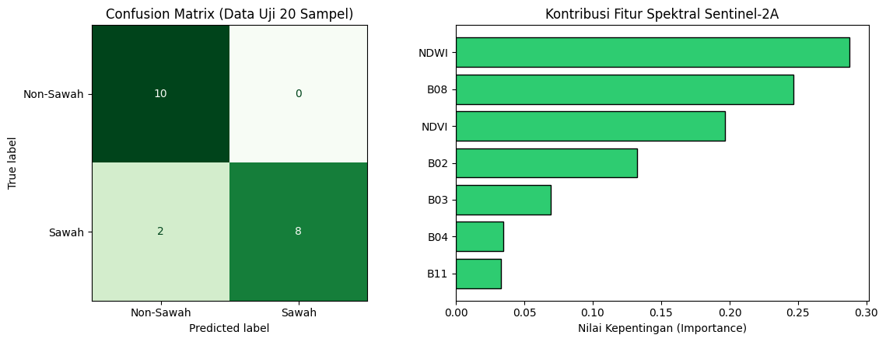
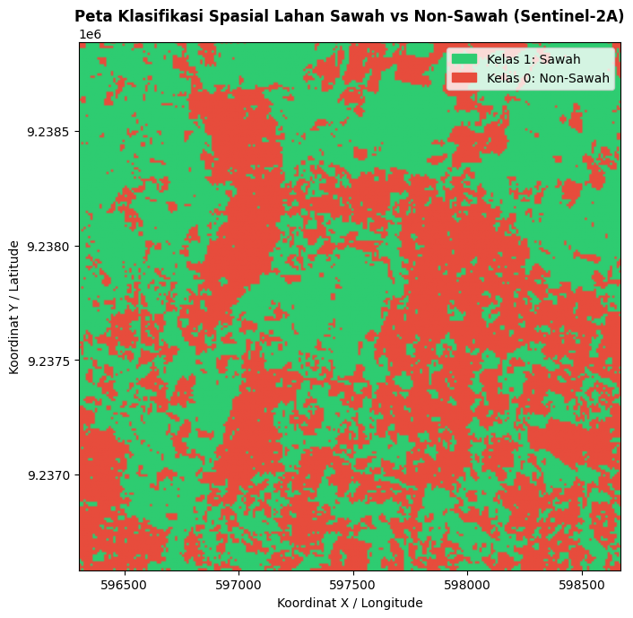

Klasifikasi Spasial Lahan Sawah dan Non-Sawah Menggunakan Citra Sentinel-2A#
Bagian ini mendokumentasikan tahapan akuisisi citra satelit optik Sentinel-2A (Level-2A) dalam format GeoTIFF (.tif) melalui openEO, ekstraksi nilai spektral pada 100 titik sampel (50 sampel Sawah dan 50 sampel Non-Sawah) yang telah dilabeli melalui QGIS, hingga pemodelan klasifikasi biner (2 kelas).
Instalasi Library Yang Digunakan#
pip install geopandas
Collecting geopandas
Downloading geopandas-1.2.0-py3-none-any.whl.metadata (2.0 kB)
Requirement already satisfied: numpy>=2 in /opt/conda/envs/esa-snap/lib/python3.12/site-packages (from geopandas) (2.4.6)
Requirement already satisfied: packaging in /opt/conda/envs/esa-snap/lib/python3.12/site-packages (from geopandas) (26.2)
Requirement already satisfied: pandas>=2.2.0 in /opt/conda/envs/esa-snap/lib/python3.12/site-packages (from geopandas) (3.0.3)
Collecting pyogrio>=0.8 (from geopandas)
Downloading pyogrio-0.13.0-cp311-abi3-manylinux_2_28_x86_64.whl.metadata (5.8 kB)
Requirement already satisfied: pyproj>=3.7.0 in /opt/conda/envs/esa-snap/lib/python3.12/site-packages (from geopandas) (3.7.2)
Collecting shapely>=2.1.0 (from geopandas)
Downloading shapely-2.1.2-cp312-cp312-manylinux2014_x86_64.manylinux_2_17_x86_64.whl.metadata (6.8 kB)
Requirement already satisfied: python-dateutil>=2.8.2 in /opt/conda/envs/esa-snap/lib/python3.12/site-packages (from pandas>=2.2.0->geopandas) (2.9.0.post0)
Requirement already satisfied: certifi in /opt/conda/envs/esa-snap/lib/python3.12/site-packages (from pyogrio>=0.8->geopandas) (2026.5.20)
Requirement already satisfied: six>=1.5 in /opt/conda/envs/esa-snap/lib/python3.12/site-packages (from python-dateutil>=2.8.2->pandas>=2.2.0->geopandas) (1.17.0)
Downloading geopandas-1.2.0-py3-none-any.whl (368 kB)
Downloading pyogrio-0.13.0-cp311-abi3-manylinux_2_28_x86_64.whl (33.3 MB)
━━━━━━━━━━━━━━━━━━━━━━━━━━━━━━━━━━━━━━━━ 33.3/33.3 MB 101.6 MB/s eta 0:00:00a 0:00:01
?25hDownloading shapely-2.1.2-cp312-cp312-manylinux2014_x86_64.manylinux_2_17_x86_64.whl (3.1 MB)
━━━━━━━━━━━━━━━━━━━━━━━━━━━━━━━━━━━━━━━━ 3.1/3.1 MB 8.6 MB/s eta 0:00:00eta 0:00:01
?25hInstalling collected packages: shapely, pyogrio, geopandas
━━━━━━━━━━━━━━━━━━━━━━━━━━━━━━━━━━━━━━━━ 3/3 [geopandas]/3 [geopandas]
Successfully installed geopandas-1.2.0 pyogrio-0.13.0 shapely-2.1.2
Note: you may need to restart the kernel to use updated packages.
pip install openeo
Collecting openeo
Downloading openeo-0.52.0-py3-none-any.whl.metadata (8.9 kB)
Requirement already satisfied: requests>=2.26.0 in /opt/conda/envs/esa-snap/lib/python3.12/site-packages (from openeo) (2.34.2)
Requirement already satisfied: urllib3>=1.9.0 in /opt/conda/envs/esa-snap/lib/python3.12/site-packages (from openeo) (2.7.0)
Requirement already satisfied: shapely>=1.6.4 in /opt/conda/envs/esa-snap/lib/python3.12/site-packages (from openeo) (2.1.2)
Requirement already satisfied: numpy>=1.17.0 in /opt/conda/envs/esa-snap/lib/python3.12/site-packages (from openeo) (2.4.6)
Collecting xarray<2025.01.2,>=0.12.3 (from openeo)
Downloading xarray-2025.1.1-py3-none-any.whl.metadata (11 kB)
Collecting pandas<3.0.0,>0.20.0 (from openeo)
Downloading pandas-2.3.3-cp312-cp312-manylinux_2_24_x86_64.manylinux_2_28_x86_64.whl.metadata (91 kB)
Requirement already satisfied: pystac>=1.5.0 in /opt/conda/envs/esa-snap/lib/python3.12/site-packages (from openeo) (1.13.0)
Collecting deprecated>=1.2.12 (from openeo)
Downloading deprecated-3.0.0-py3-none-any.whl.metadata (6.5 kB)
Requirement already satisfied: geopandas>=0.14 in /opt/conda/envs/esa-snap/lib/python3.12/site-packages (from openeo) (1.2.0)
Requirement already satisfied: python-dateutil>=2.8.2 in /opt/conda/envs/esa-snap/lib/python3.12/site-packages (from pandas<3.0.0,>0.20.0->openeo) (2.9.0.post0)
Collecting pytz>=2020.1 (from pandas<3.0.0,>0.20.0->openeo)
Downloading pytz-2026.4-py2.py3-none-any.whl.metadata (22 kB)
Collecting tzdata>=2022.7 (from pandas<3.0.0,>0.20.0->openeo)
Downloading tzdata-2026.5-py2.py3-none-any.whl.metadata (1.4 kB)
Requirement already satisfied: packaging>=23.2 in /opt/conda/envs/esa-snap/lib/python3.12/site-packages (from xarray<2025.01.2,>=0.12.3->openeo) (26.2)
Collecting wrapt<3,>=1.16 (from deprecated>=1.2.12->openeo)
Downloading wrapt-2.5.0-cp312-cp312-manylinux1_x86_64.manylinux_2_28_x86_64.manylinux_2_5_x86_64.whl.metadata (7.6 kB)
Requirement already satisfied: pyogrio>=0.8 in /opt/conda/envs/esa-snap/lib/python3.12/site-packages (from geopandas>=0.14->openeo) (0.13.0)
Requirement already satisfied: pyproj>=3.7.0 in /opt/conda/envs/esa-snap/lib/python3.12/site-packages (from geopandas>=0.14->openeo) (3.7.2)
Requirement already satisfied: certifi in /opt/conda/envs/esa-snap/lib/python3.12/site-packages (from pyogrio>=0.8->geopandas>=0.14->openeo) (2026.5.20)
Requirement already satisfied: six>=1.5 in /opt/conda/envs/esa-snap/lib/python3.12/site-packages (from python-dateutil>=2.8.2->pandas<3.0.0,>0.20.0->openeo) (1.17.0)
Requirement already satisfied: charset_normalizer<4,>=2 in /opt/conda/envs/esa-snap/lib/python3.12/site-packages (from requests>=2.26.0->openeo) (3.4.7)
Requirement already satisfied: idna<4,>=2.5 in /opt/conda/envs/esa-snap/lib/python3.12/site-packages (from requests>=2.26.0->openeo) (3.18)
Downloading openeo-0.52.0-py3-none-any.whl (356 kB)
Downloading pandas-2.3.3-cp312-cp312-manylinux_2_24_x86_64.manylinux_2_28_x86_64.whl (12.4 MB)
━━━━━━━━━━━━━━━━━━━━━━━━━━━━━━━━━━━━━━━━ 12.4/12.4 MB 87.3 MB/s eta 0:00:00
?25hDownloading xarray-2025.1.1-py3-none-any.whl (1.2 MB)
━━━━━━━━━━━━━━━━━━━━━━━━━━━━━━━━━━━━━━━━ 1.2/1.2 MB 54.3 MB/s eta 0:00:00
?25hDownloading deprecated-3.0.0-py3-none-any.whl (21 kB)
Downloading wrapt-2.5.0-cp312-cp312-manylinux1_x86_64.manylinux_2_28_x86_64.manylinux_2_5_x86_64.whl (250 kB)
Downloading pytz-2026.4-py2.py3-none-any.whl (506 kB)
Downloading tzdata-2026.5-py2.py3-none-any.whl (347 kB)
Installing collected packages: pytz, wrapt, tzdata, pandas, deprecated, xarray, openeo
Attempting uninstall: pandas0m━━━━━━━━━━━━━━━━━━━━━━━━━━━━━━━━━━ 1/7 [wrapt]
Found existing installation: pandas 3.0.3━━━━━━━━━━━━━━━━━ 1/7 [wrapt]
Uninstalling pandas-3.0.3:[90m╺━━━━━━━━━━━━━━━━━━━━━━ 3/7 [pandas]
Successfully uninstalled pandas-3.0.3m━━━━━━━━━━━━━━━━━━━━━━ 3/7 [pandas]
Attempting uninstall: xarray[90m╺━━━━━━━━━━━━━━━━━━━━━━ 3/7 [pandas]
Found existing installation: xarray 2026.4.0━━━━━━━━━━━━━━ 3/7 [pandas]
Uninstalling xarray-2026.4.0:0m━━━━━━━━━━━━━━━━━━━━━━ 3/7 [pandas]
Successfully uninstalled xarray-2026.4.0━━━━━━━━━━━ 5/7 [xarray]
━━━━━━━━━━━━━━━━━━━━━━━━━━━━━━━━━━━━━━━━ 7/7 [openeo]2m6/7 [openeo]
Successfully installed deprecated-3.0.0 openeo-0.52.0 pandas-2.3.3 pytz-2026.4 tzdata-2026.5 wrapt-2.5.0 xarray-2025.1.1
Note: you may need to restart the kernel to use updated packages.
%pip install scikit-learn
Collecting scikit-learn
Downloading scikit_learn-1.9.1-cp312-cp312-manylinux_2_27_x86_64.manylinux_2_28_x86_64.whl.metadata (9.3 kB)
Requirement already satisfied: numpy>=1.24.1 in /opt/conda/envs/esa-snap/lib/python3.12/site-packages (from scikit-learn) (2.4.6)
Requirement already satisfied: scipy>=1.10.0 in /opt/conda/envs/esa-snap/lib/python3.12/site-packages (from scikit-learn) (1.17.1)
Collecting joblib>=1.4.0 (from scikit-learn)
Downloading joblib-1.6.0-py3-none-any.whl.metadata (6.5 kB)
Collecting narwhals>=2.0.1 (from scikit-learn)
Downloading narwhals-2.26.0-py3-none-any.whl.metadata (15 kB)
Collecting threadpoolctl>=3.5.0 (from scikit-learn)
Downloading threadpoolctl-3.7.0-py3-none-any.whl.metadata (24 kB)
Collecting cloudpickle>=3.0 (from joblib>=1.4.0->scikit-learn)
Downloading cloudpickle-3.1.2-py3-none-any.whl.metadata (7.1 kB)
Downloading scikit_learn-1.9.1-cp312-cp312-manylinux_2_27_x86_64.manylinux_2_28_x86_64.whl (9.2 MB)
━━━━━━━━━━━━━━━━━━━━━━━━━━━━━━━━━━━━━━━━ 9.2/9.2 MB 68.2 MB/s eta 0:00:00
?25hDownloading joblib-1.6.0-py3-none-any.whl (306 kB)
Downloading cloudpickle-3.1.2-py3-none-any.whl (22 kB)
Downloading narwhals-2.26.0-py3-none-any.whl (474 kB)
Downloading threadpoolctl-3.7.0-py3-none-any.whl (26 kB)
Installing collected packages: threadpoolctl, narwhals, cloudpickle, joblib, scikit-learn
━━━━━━━━━━━━━━━━━━━━━━━━━━━━━━━━━━━━━━━━ 5/5 [scikit-learn][0m [scikit-learn]
Successfully installed cloudpickle-3.1.2 joblib-1.6.0 narwhals-2.26.0 scikit-learn-1.9.1 threadpoolctl-3.7.0
Note: you may need to restart the kernel to use updated packages.
1. Desain Pengambilan Sampel (Ground Truth)#
Pengambilan sampel dilakukan secara spasial dengan membagi objek pengamatan ke dalam dua kelas seimbang (balanced dataset) dalam format vektor (Shapefile / GeoJSON):
Kelas Target |
Kode Label |
Jumlah Sampel |
Karakteristik Objek |
|---|---|---|---|
Sawah |
|
50 Sampel |
Petak lahan pertanian padi aktif (fase vegetatif, genangan air/tanam, maupun pematangan) |
Non-Sawah |
|
50 Sampel |
Permukiman/bangunan, jalan raya, badan air permanen, dan vegetasi non-pertanian |
Total |
— |
100 Sampel |
Digabungkan menjadi satu GeoDataFrame berproyeksi |
import geopandas as gpd
import openeo
import pandas as pd
# ==============================================================================
# 1. BACA KEDUA FILE ZIP (SAWAH & NON-SAWAH) DAN BERI LABEL OTOMATIS
# ==============================================================================
# Sesuaikan nama file zip non-sawah milikmu di baris kedua
gdf_sawah = gpd.read_file("mystorage/sawah.zip").to_crs("EPSG:4326")
gdf_nonsawah = gpd.read_file("mystorage/non-sawah.zip").to_crs("EPSG:4326")
# Beri kolom label secara otomatis
gdf_sawah["label_teks"] = "Sawah"
gdf_sawah["label"] = 1
gdf_nonsawah["label_teks"] = "Non-Sawah"
gdf_nonsawah["label"] = 0
# Gabungkan keduanya menjadi 1 GeoDataFrame (50 + 50 = 100 sampel)
gdf_gabungan = gpd.GeoDataFrame(
pd.concat([gdf_sawah, gdf_nonsawah], ignore_index=True), crs="EPSG:4326"
)
print(f"Jumlah sampel Sawah : {len(gdf_sawah)}")
print(f"Jumlah sampel Non-Sawah : {len(gdf_nonsawah)}")
print(f"Total sampel gabungan : {len(gdf_gabungan)}")
# ==============================================================================
# 2. AMBIL BATAS KOORDINAT GABUNGAN (BOUNDING BOX) UNTUK OPENEO
# ==============================================================================
minx, miny, maxx, maxy = gdf_gabungan.total_bounds
buffer_deg = 0.005 # Tambahan margin ~500 meter agar titik di tepi tetap masuk
bbox = {
"west": float(minx - buffer_deg),
"south": float(miny - buffer_deg),
"east": float(maxx + buffer_deg),
"north": float(maxy + buffer_deg),
}
print("Bounding Box Gabungan:", bbox)
# ==============================================================================
# 3. KONEKSI KE OPENEO & UNDUH SENTINEL-2A FORMAT GEOTIFF (.tif)
# ==============================================================================
conn = openeo.connect("openeo.dataspace.copernicus.eu")
conn.authenticate_oidc()
datacube = conn.load_collection(
"SENTINEL2_L2A",
spatial_extent=bbox,
temporal_extent=["2026-05-01", "2026-09-30"], # Rentang waktu minim awan
bands=[
"B02",
"B03",
"B04",
"B08",
"B11",
], # Blue, Green, Red, NIR, SWIR
max_cloud_cover=10,
)
# Ambil median waktu agar bebas tutupan awan
composite_s2 = datacube.median_time()
# Unduh menjadi file GeoTIFF (.tif)
nama_tif = "sentinel2_sawah_nonsawah.tif"
print("Mengunduh citra Sentinel-2A (.tif)...")
composite_s2.download(nama_tif, format="GTiff")
print(f"Berhasil diunduh: {nama_tif}")
Jumlah sampel Sawah : 50
Jumlah sampel Non-Sawah : 50
Total sampel gabungan : 100
Bounding Box Gabungan: {'west': 111.87169010000001, 'south': -6.9056517, 'east': 111.8930379, 'north': -6.8848906}
Authenticated using refresh token.
Mengunduh citra Sentinel-2A (.tif)...
Berhasil diunduh: sentinel2_sawah_nonsawah.tif
2. Akuisisi Citra Sentinel-2A (.tif) via openEO dan Ekstraksi Fitur#
Akuisisi citra dilakukan menggunakan bounding box gabungan dari ke-100 titik sampel pada koleksi SENTINEL2_L2A (Bottom-of-Atmosphere Reflectance) dengan batas tutupan awan maksimum < 10% dan agregasi temporal median_time() untuk menghasilkan komposit citra bebas awan berformat GeoTIFF (.tif).
Fitur Spektral dan Indeks Turunan yang Diekstrak:#
Band Spektral Utama:
B02(Blue - 490 nm),B03(Green - 560 nm),B04(Red - 665 nm) dengan resolusi spasial 10 meter.B08(Near Infrared / NIR - 842 nm) untuk mendeteksi pantulan klorofil tanaman padi.B11(Short-Wave Infrared / SWIR - 1610 nm) untuk mendeteksi kelembapan tanah dan genangan air.
Normalized Difference Vegetation Index (NDVI): $\(\text{NDVI} = \frac{B08 - B04}{B08 + B04}\)$
Normalized Difference Water Index (NDWI): $\(\text{NDWI} = \frac{B03 - B08}{B03 + B08}\)$
import numpy as np
import rasterio
from sklearn.ensemble import RandomForestClassifier
from sklearn.metrics import accuracy_score, classification_report, confusion_matrix
from sklearn.model_selection import train_test_split
# 1. Buka file .tif Sentinel-2A dan samakan proyeksi koordinat (CRS)
with rasterio.open("sentinel2_sawah_nonsawah.tif") as src:
gdf_projected = gdf_gabungan.to_crs(src.crs)
# Ambil titik tengah (centroid) dari tiap sampel (mendukung Point maupun Polygon)
koordinat_sampel = [
(geom.centroid.x, geom.centroid.y) for geom in gdf_projected.geometry
]
# Ekstrak nilai piksel dari kelima band Sentinel-2A
nilai_band = list(src.sample(koordinat_sampel))
# 2. Buat tabel DataFrame Fitur
df_dataset = pd.DataFrame(nilai_band, columns=["B02", "B03", "B04", "B08", "B11"])
# 3. Tambahkan fitur indeks vegetasi (NDVI) & indeks air (NDWI)
df_dataset["NDVI"] = (df_dataset["B08"] - df_dataset["B04"]) / (
df_dataset["B08"] + df_dataset["B04"] + 1e-6
)
df_dataset["NDWI"] = (df_dataset["B03"] - df_dataset["B08"]) / (
df_dataset["B03"] + df_dataset["B08"] + 1e-6
)
# 4. Masukkan Koordinat & Label Kelas (Sawah = 1, Non-Sawah = 0)
df_dataset["Longitude"] = gdf_gabungan.geometry.centroid.x
df_dataset["Latitude"] = gdf_gabungan.geometry.centroid.y
df_dataset["Kelas"] = gdf_gabungan["label_teks"]
df_dataset["Target"] = gdf_gabungan["label"]
# Simpan ke CSV (bisa dipakai juga kalau mau diolah di KNIME)
df_dataset.to_csv("dataset_100sampel_sawah_nonsawah.csv", index=False)
print("Dataset berhasil disimpan ke 'dataset_100sampel_sawah_nonsawah.csv'")
display(df_dataset.head())
# ==============================================================================
# 5. PROSES KLASIFIKASI 2 KELAS (SAWAH VS NON-SAWAH)
# ==============================================================================
fitur_kolom = ["B02", "B03", "B04", "B08", "B11", "NDVI", "NDWI"]
X = df_dataset[fitur_kolom]
y = df_dataset["Kelas"]
# Split 80% Training (40 Sawah + 40 Non-Sawah) & 20% Testing (10 Sawah + 10 Non-Sawah)
X_train, X_test, y_train, y_test = train_test_split(
X, y, test_size=0.2, random_state=42, stratify=y
)
# Latih model Random Forest
model_rf = RandomForestClassifier(n_estimators=100, random_state=42)
model_rf.fit(X_train, y_train)
# Evaluasi pada data uji
y_pred = model_rf.predict(X_test)
print(
"\n=== HASIL EVALUASI KLASIFIKASI 2 KELAS ==="
)
print(f"Akurasi Testing : {accuracy_score(y_test, y_pred) * 100:.2f}%")
print("\nConfusion Matrix:\n", confusion_matrix(y_test, y_pred))
print("\nClassification Report:\n", classification_report(y_test, y_pred))
/opt/conda/envs/esa-snap/lib/python3.12/site-packages/joblib/_multiprocessing_helpers.py:44: UserWarning: [Errno 2] No such file or directory. joblib will operate in serial mode
warnings.warn("%s. joblib will operate in serial mode" % (e,))
Dataset berhasil disimpan ke 'dataset_100sampel_sawah_nonsawah.csv'
/tmp/ipykernel_220/276632000.py:31: UserWarning: Geometry is in a geographic CRS. Results from 'centroid' are likely incorrect. Use 'GeoSeries.to_crs()' to re-project geometries to a projected CRS before this operation.
df_dataset["Longitude"] = gdf_gabungan.geometry.centroid.x
/tmp/ipykernel_220/276632000.py:32: UserWarning: Geometry is in a geographic CRS. Results from 'centroid' are likely incorrect. Use 'GeoSeries.to_crs()' to re-project geometries to a projected CRS before this operation.
df_dataset["Latitude"] = gdf_gabungan.geometry.centroid.y
| B02 | B03 | B04 | B08 | B11 | NDVI | NDWI | Longitude | Latitude | Kelas | Target | |
|---|---|---|---|---|---|---|---|---|---|---|---|
| 0 | 725 | 1053 | 1395 | 2864 | 3501 | 0.344917 | -0.462344 | 111.877677 | -6.897550 | Sawah | 1 |
| 1 | 549 | 784 | 1080 | 2622 | 3034 | 0.416532 | -0.539636 | 111.877841 | -6.897592 | Sawah | 1 |
| 2 | 536 | 952 | 1107 | 2866 | 2877 | 0.442738 | -0.501310 | 111.877975 | -6.897645 | Sawah | 1 |
| 3 | 729 | 1147 | 1469 | 2971 | 3811 | 0.338288 | -0.442933 | 111.877620 | -6.897741 | Sawah | 1 |
| 4 | 652 | 950 | 1331 | 2859 | 3353 | 0.364678 | -0.501181 | 111.877782 | -6.897796 | Sawah | 1 |
=== HASIL EVALUASI KLASIFIKASI 2 KELAS ===
Akurasi Testing : 90.00%
Confusion Matrix:
[[10 0]
[ 2 8]]
Classification Report:
precision recall f1-score support
Non-Sawah 0.83 1.00 0.91 10
Sawah 1.00 0.80 0.89 10
accuracy 0.90 20
macro avg 0.92 0.90 0.90 20
weighted avg 0.92 0.90 0.90 20
pip install seaborn
Collecting seaborn
Downloading seaborn-0.13.2-py3-none-any.whl.metadata (5.4 kB)
Requirement already satisfied: numpy!=1.24.0,>=1.20 in /opt/conda/envs/esa-snap/lib/python3.12/site-packages (from seaborn) (2.4.6)
Requirement already satisfied: pandas>=1.2 in /opt/conda/envs/esa-snap/lib/python3.12/site-packages (from seaborn) (2.3.3)
Requirement already satisfied: matplotlib!=3.6.1,>=3.4 in /opt/conda/envs/esa-snap/lib/python3.12/site-packages (from seaborn) (3.10.3)
Requirement already satisfied: contourpy>=1.0.1 in /opt/conda/envs/esa-snap/lib/python3.12/site-packages (from matplotlib!=3.6.1,>=3.4->seaborn) (1.3.3)
Requirement already satisfied: cycler>=0.10 in /opt/conda/envs/esa-snap/lib/python3.12/site-packages (from matplotlib!=3.6.1,>=3.4->seaborn) (0.12.1)
Requirement already satisfied: fonttools>=4.22.0 in /opt/conda/envs/esa-snap/lib/python3.12/site-packages (from matplotlib!=3.6.1,>=3.4->seaborn) (4.63.0)
Requirement already satisfied: kiwisolver>=1.3.1 in /opt/conda/envs/esa-snap/lib/python3.12/site-packages (from matplotlib!=3.6.1,>=3.4->seaborn) (1.5.0)
Requirement already satisfied: packaging>=20.0 in /opt/conda/envs/esa-snap/lib/python3.12/site-packages (from matplotlib!=3.6.1,>=3.4->seaborn) (26.2)
Requirement already satisfied: pillow>=8 in /opt/conda/envs/esa-snap/lib/python3.12/site-packages (from matplotlib!=3.6.1,>=3.4->seaborn) (12.2.0)
Requirement already satisfied: pyparsing>=2.3.1 in /opt/conda/envs/esa-snap/lib/python3.12/site-packages (from matplotlib!=3.6.1,>=3.4->seaborn) (3.3.2)
Requirement already satisfied: python-dateutil>=2.7 in /opt/conda/envs/esa-snap/lib/python3.12/site-packages (from matplotlib!=3.6.1,>=3.4->seaborn) (2.9.0.post0)
Requirement already satisfied: pytz>=2020.1 in /opt/conda/envs/esa-snap/lib/python3.12/site-packages (from pandas>=1.2->seaborn) (2026.4)
Requirement already satisfied: tzdata>=2022.7 in /opt/conda/envs/esa-snap/lib/python3.12/site-packages (from pandas>=1.2->seaborn) (2026.5)
Requirement already satisfied: six>=1.5 in /opt/conda/envs/esa-snap/lib/python3.12/site-packages (from python-dateutil>=2.7->matplotlib!=3.6.1,>=3.4->seaborn) (1.17.0)
Downloading seaborn-0.13.2-py3-none-any.whl (294 kB)
Installing collected packages: seaborn
Successfully installed seaborn-0.13.2
Note: you may need to restart the kernel to use updated packages.
3. Hasil Evaluasi Klasifikasi 2 Kelas (Random Forest)#
Dataset 100 sampel dibagi menggunakan skema Stratified Train-Test Split dengan proporsi 80% Data Latih (80 sampel: 40 Sawah, 40 Non-Sawah) dan 20% Data Uji (20 sampel: 10 Sawah, 10 Non-Sawah).

Fig. 5 Confusion Matrix pada Data Uji dan Tingkat Kepentingan Fitur (Feature Importance) Sentinel-2A.#
import matplotlib.colors as mcolors
import matplotlib.patches as mpatches
import matplotlib.pyplot as plt
import numpy as np
import rasterio
import seaborn as sns
from sklearn.metrics import ConfusionMatrixDisplay
# ==============================================================================
# A. VISUALISASI CONFUSION MATRIX & FEATURE IMPORTANCE
# ==============================================================================
fig, axes = plt.subplots(1, 2, figsize=(12, 4.5))
# 1. Plot Confusion Matrix
ConfusionMatrixDisplay.from_predictions(
y_test, y_pred, cmap="Greens", ax=axes[0], colorbar=False
)
axes[0].set_title("Confusion Matrix (Data Uji 20 Sampel)")
# 2. Plot Tingkat Kepentingan Fitur (Band & Indeks Spektral)
importances = model_rf.feature_importances_
indices = np.argsort(importances)
axes[1].barh(
range(len(indices)),
importances[indices],
color="#2ecc71",
edgecolor="black",
)
axes[1].set_yticks(range(len(indices)))
axes[1].set_yticklabels([fitur_kolom[i] for i in indices])
axes[1].set_xlabel("Nilai Kepentingan (Importance)")
axes[1].set_title("Kontribusi Fitur Spektral Sentinel-2A")
plt.tight_layout()
plt.savefig("evaluasi_klasifikasi_sawah.png", dpi=300)
plt.show()
# ==============================================================================
# B. KLASIFIKASI SELURUH PIKSEL CITRA (.TIF) MENJADI PETA SAWAH VS NON-SAWAH
# ==============================================================================
with rasterio.open("sentinel2_sawah_nonsawah.tif") as src:
img = src.read() # Shape: (5 bands, height, width)
profil_raster = src.profile
bounds = src.bounds
# Ambil masing-masing band (B02, B03, B04, B08, B11)
b02, b03, b04, b08, b11 = (
img[0].astype(float),
img[1].astype(float),
img[2].astype(float),
img[3].astype(float),
img[4].astype(float),
)
# Hitung NDVI dan NDWI untuk seluruh piksel di citra .tif
ndvi_map = (b08 - b04) / (b08 + b04 + 1e-6)
ndwi_map = (b03 - b08) / (b03 + b08 + 1e-6)
# Susun seluruh piksel menjadi matriks 2D (baris = piksel, kolom = 7 fitur)
stack_fitur = np.stack([b02, b03, b04, b08, b11, ndvi_map, ndwi_map], axis=-1)
h, w, c = stack_fitur.shape
piksel_2d = np.nan_to_num(stack_fitur.reshape(-1, c), nan=0.0)
# Prediksi seluruh piksel menggunakan model Random Forest yang sudah dilatih
prediksi_label = model_rf.predict(piksel_2d)
# Ubah hasil prediksi ('Sawah' -> 1, 'Non-Sawah' -> 0) kembali ke ukuran gambar 2D (h, w)
peta_biner = np.where(prediksi_label == "Sawah", 1, 0).reshape(h, w)
# Tampilkan Peta Hasil Klasifikasi Spasial
plt.figure(figsize=(9, 7))
cmap_sawah = mcolors.ListedColormap(["#e74c3c", "#2ecc71"]) # Merah & Hijau
plt.imshow(
peta_biner,
cmap=cmap_sawah,
extent=[bounds.left, bounds.right, bounds.bottom, bounds.top],
)
# Legenda Peta
patch_sawah = mpatches.Patch(color="#2ecc71", label="Kelas 1: Sawah")
patch_nonsawah = mpatches.Patch(color="#e74c3c", label="Kelas 0: Non-Sawah")
plt.legend(handles=[patch_sawah, patch_nonsawah], loc="upper right")
plt.title(
"Peta Klasifikasi Spasial Lahan Sawah vs Non-Sawah (Sentinel-2A)",
fontsize=12,
fontweight="bold",
)
plt.xlabel("Koordinat X / Longitude")
plt.ylabel("Koordinat Y / Latitude")
plt.tight_layout()
plt.savefig("peta_klasifikasi_raster_sawah.png", dpi=300)
plt.show()

/opt/conda/envs/esa-snap/lib/python3.12/site-packages/sklearn/utils/validation.py:2830: UserWarning: X does not have valid feature names, but RandomForestClassifier was fitted with feature names
warnings.warn(
